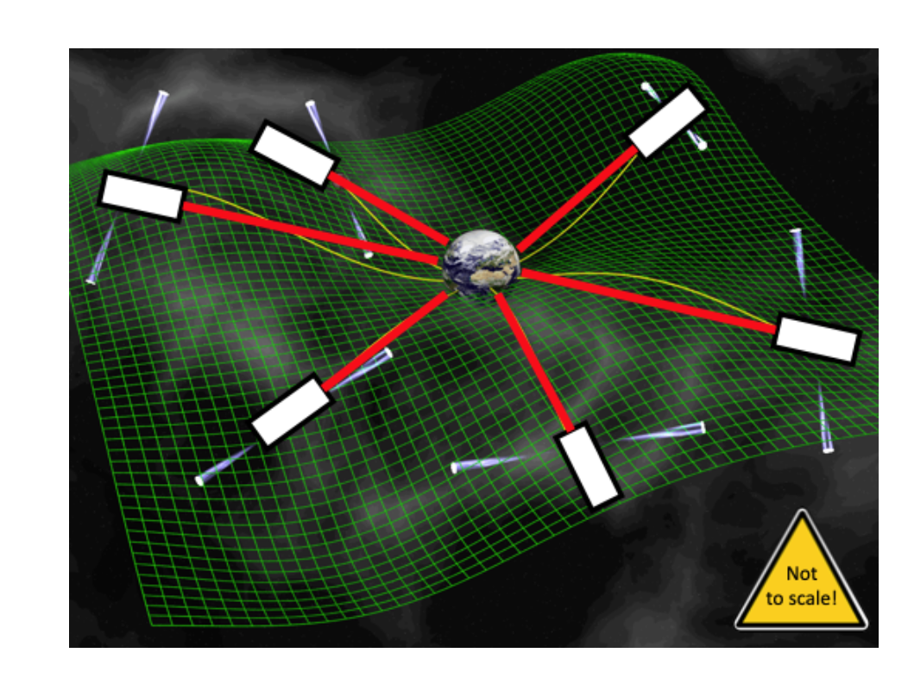
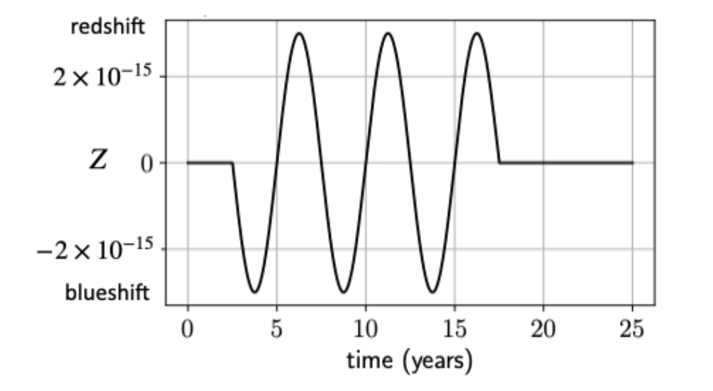
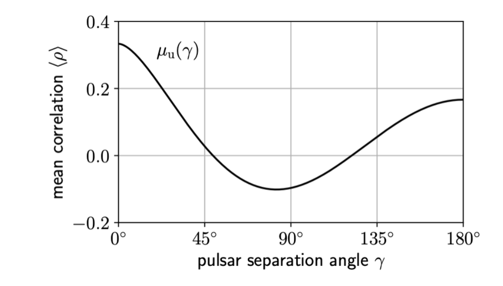
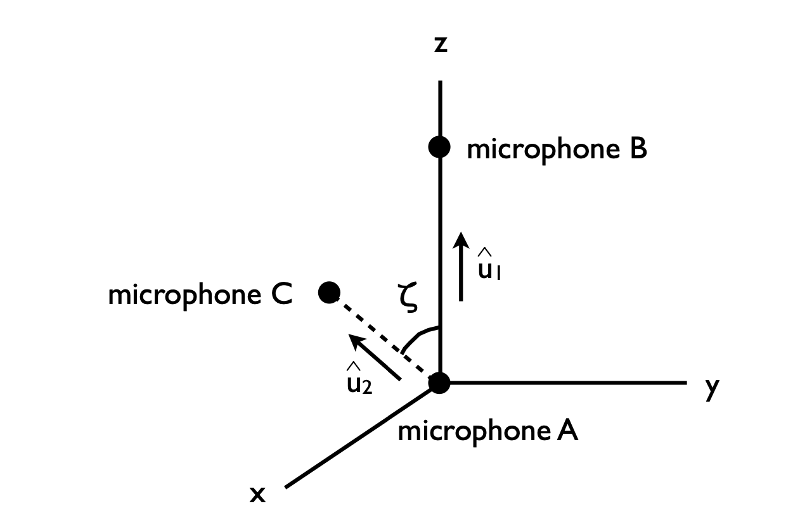
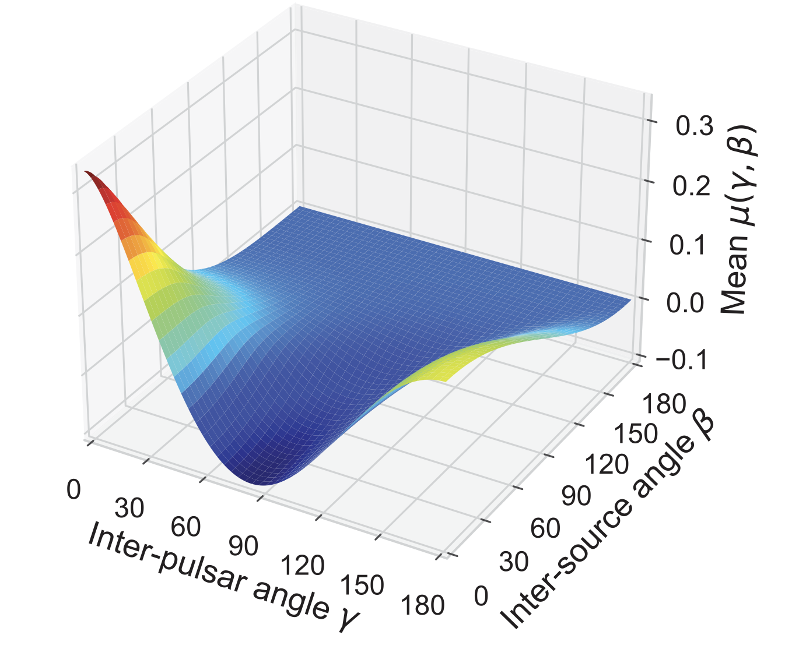
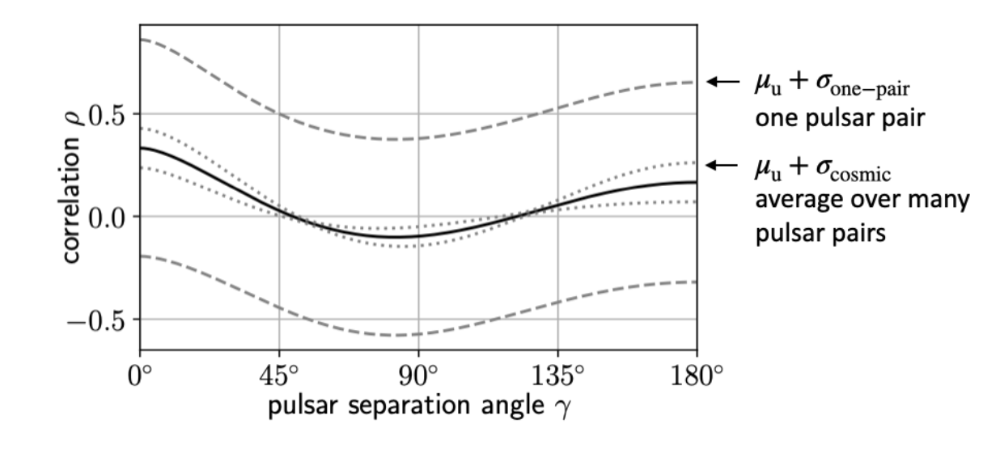

On the shape of the Hellings-Downs curve
Yuhao
CERCA Talk
Introduction: the Hellings-Downs curve and the Nanograv experiment
Reference for the intro section
- Bruce Allen, "Will Pulsar Timing Arrays observe the Hellings and Downs curve?", Frascati Physics Series Vol. 74 (2022)
The Nanograv experiment
- Use Pulsar Timing Arrays to detect the stachastic GW background.
The goal is the reproduce the Hellings-Downs curve through PTAs.

The redshift
- The data stream from each pulsar is a redshift \(z = \Delta f/f\)
- Expected redshift of a pulsar signal induced by a GW

- Redshift/blueshift of a pulsar signal induced by GW that oscillates through three cycles with an oscillation period of five years
The Hellings-Downs curve
Steps to find the HD curve
- Place a single distant unit-amplitude unpolarized GW source at a point in the sky.
- Write down the correlation between the redshifts of two pulsars separated by angle \(\gamma\).
- Average the correlation over all pairs of pulsars separated by angle \(\gamma\), assuming that these were uniformly distributed around the sky.
- To to the last step, the pulsar positions are fixed and average is taken over source directions on the celestial sphere, which is equivalent to the last step from symmetry.

Question
- Why is the HD curve asymmetric?
The analogy of HD curves in sound and E&M waves
Reference for this section
- Fredrick A. Jenet, Joseph D. Romano, "Understanding the gravitational-wave Hellings and Downs curve for pulsar timing arrays in terms of sound and electromagnetic waves", Am. J. Phys. 83, 635 (2015)
The setups and signals
- Setup for sound wave system

- Setup for E&M wave system

Signal
\begin{align} r_1 &= V_A - V_B \\ r_2 &= V_A - V_C \end{align}- The correlated response is \(\langle r_1(t) r_2(t) \rangle\)
- The analogy for the H-D curve:
- For the sound wave \(\langle r_1 r_2 \rangle \simeq G^2 \langle p^2 \rangle\), where \(G\) is the gain, \(p\) is the pressure.
- For the E&M wave \(\langle r_1 r_2 \rangle \simeq \frac{1}{3} \cos \zeta \langle E^2 \rangle\)
- They are actually both symmetric.
Compare the symmetric cases for sound waves and E&M waves with the asymmetric case for GW
Reference for the section
M. Anholm, S. Ballmer, J. D. E. Creighton, L. R. Price, and X. Siemens, Optimal strategies for gravitational wave stochastic background searches in pulsar timing data, Phys. Rev. D 79, 084030 (2009).
Derive the Hellings-Downs curve
- The expression for the redshift is
where, \(i,j = x, y, z\), and \(\widehat{p}\) is the unit vector pointing from the solar system barycenter to the pulsar, \(\widehat{\Omega}_{(i)}\) is the unit vector in the propagation direction of the gravitational wave.
For the average of the product of red shifts in the signals from two pulsars 1 and 2 in frequency domain,
\begin{align} <\widetilde{z}_1^*(f)\widetilde{z}_2(f)> &\propto \Gamma \times |f|^{-3} \nonumber \\ & \times [\textrm{quantity related to gravitational wave energy density and some other stuff}] \end{align}where,
\begin{align} \Gamma = \frac{1}{4} \beta \sum_{A = +, \times}\int d \widehat{\Omega} \frac{\widehat{p}_1^i\widehat{p}_1^j}{1 + \widehat{\Omega}\cdot \widehat{p}_1} \frac{\widehat{p}_2^k\widehat{p}_2^l}{1 + \widehat{\Omega}\cdot \widehat{p}_2} e^A_{ij}(\widehat{\Omega})e^A_{kl}(\widehat{\Omega}) \end{align}
How to do the integration?
If \(\widehat{\Omega} = (\sin \theta \cos \phi, \sin \theta \sin \phi, \cos \theta)\), then
\begin{align} e_{ij}^+(\widehat{\Omega}) &= \widehat{m}_i\widehat{m}_j - \widehat{n}_i\widehat{n}_j \\ e_{ij}^\times (\widehat{\Omega}) &= \widehat{m}_i\widehat{n}_j + \widehat{n}_i\widehat{m}_j \end{align}where,
\begin{align} &\widehat{m} = (\sin \phi, \cos \phi, 0)\\ &\widehat{n} = (\cos \theta \cos \phi, \cos \theta \sin \phi, - \sin \theta) \end{align}Assume the direction of pulsar 1 is along the z-axis, and the angle between the direction of pulsar 1 and the direction of pulsar 2 is \(\xi\), then
\begin{align} &\widehat{p}_1 = (0, 0, 1)\\ &\widehat{p}_2 = (\sin \xi, 0, \cos \xi) \end{align}Put the expressions together, then
\begin{align} &\Gamma = \nonumber\\ & - \frac{1}{4}\beta \int d \widehat{\Omega} \frac{\sin ^2\theta (\sin^2 \xi \sin^2 \phi - \sin^2 \xi \cos^2 \theta \sin^2 \phi - \cos^2 \xi \sin^2 \theta + 2 \sin \xi \cos \xi \sin \theta \cos \theta \cos \phi)}{(1 + \cos \theta) (1 + \cos \xi \cos \theta \sin \xi \sin \theta \cos \phi) } \end{align}The result of the integral is proportional to the Hellings-Downs curve
\begin{align} \Gamma = \frac{4 \pi}{3} \beta \left\{1 + \frac{3}{2} (1 - \cos \xi) \left[ \ln \left( \frac{1 - \cos \xi}{2} - \frac{1}{6}\right)\right]\right\} \end{align}where \(\beta\) is the normalization factor
The intuition for the asymmetric shape
- Compared to \(r_1\) and \(r_2\) in the sound waves and E&M waves, the redshift is a ratio instead of a difference between two quantities
- Mathematically, the term \(1 + \widehat{\Omega}_{(i)} \cdot \widehat{p}\) in the denominators would intuitively cause the asymmetry
Will PTAs(Pulsar Timing Arrays) observe the Hellings-Downs curve?
References
- Bruce Allen, Will Pulsar Timing Arrays observe the Hellings and Downs curve?, Frascati Physics Series Vol. 74 (2022)
- B. Allen, Variance of the Hellings-Downs correlation, Phys. Rev. D 107, 043018 (2023)
The antenna pattern function
where \(\boldsymbol{p}\) is a unit-length spatial vector pointing from Earth to pulsar, the gravitational wave travels in the direction \(\boldsymbol{\Omega}\).
The correlation between signals from two pulsars
Define uniform average over directions
For any function \(Q(\boldsymbol{\Omega})\),
\begin{align} \langle Q(\boldsymbol{\Omega}) \rangle & = \frac{1}{4 \pi} \int d \boldsymbol{\Omega} Q(\boldsymbol{\Omega}) \\ & = \frac{1}{4 \pi} \int_0^\pi \sin \theta d \theta \int_0^{2\pi} d \phi\,Q(\theta, \phi) \end{align}Correlation average for single gravitational wave source, the Hellings-Downs curve
- Observational average can be directly compared to \(h^2 \mu_{u}(\gamma)\), where \(h^2\) is the characteristic squared amplitude of the gravitational waves.
Correlation average for two gravitational wave sources
- The responses \(Z_a\) and \(Z_b\) from two pulsars \(a\) and \(b\) for two gravitational wave sources \(\Omega_1\) and \(\Omega_2\) ,
Here, \(h = h^+ + i h^\times\), where \(h^+\) and \(h^\times\) are the components in the two different polarizations.
- The average over direction
- When the two gravitational wave sources are not coherent, there is no interference between the gravitational wave sources
\(\rho\) recovers the Hellings-Downs curve.
When the two gravitational wave sources are coherent, \(\overline{h_1 h_2^*} \neq 0\), the so-called two-point function is shown in the plot below

We can see that if the angle between the two sources \(\beta = 0\), it reduces to the Hellings-Downs curve.
When average over sources with independent inter-source angles uniformly distributed on the sky, the so-called cosmic variance
\begin{align} \sigma_{\mathrm{cosmic}} = \langle \rho - \langle \rho^2 \rangle \rangle = \int_0^{\pi} d \beta\,\mu(\gamma, \beta) \end{align}

- Conclusion: PTAs wouldn't see the exact Hellings-Downs curve but close. The difference depends on the scale of the cosmic variance
Thanks for you attention